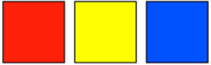
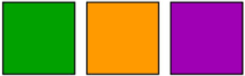

¿Qué es el color?
El color es una percepción visual generada por el cerebro al interpretar las señales nerviosas que envían los fotorreceptores de la retina.
Colores Primarios
Los colores primarios son aquellos tonos puros que no se pueden obtener mediante mezclas.

- Rojo
- Amarillo
- Azul
Colores Secundarios
Los colores secundarios se obtienen mezclando dos colores primarios.

- Azul y Amarillo = Verde
- Rojo y Amarillo = Naranja
- Azul y Rojo = Violeta